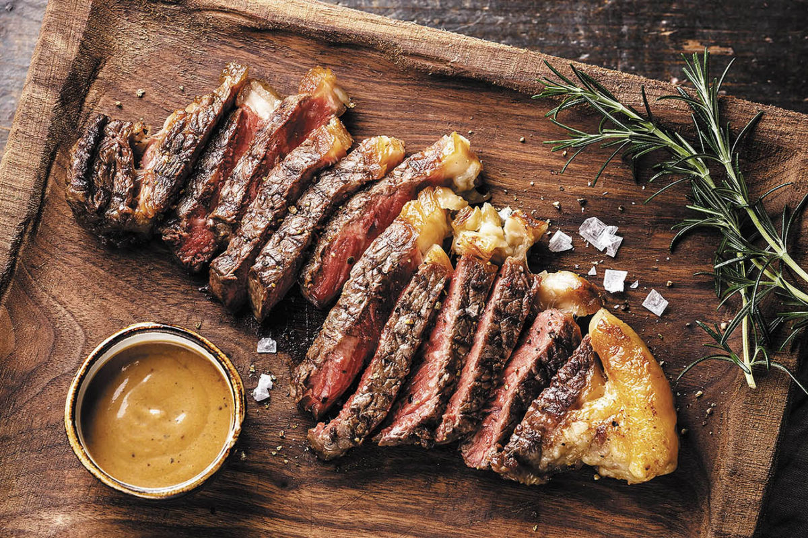
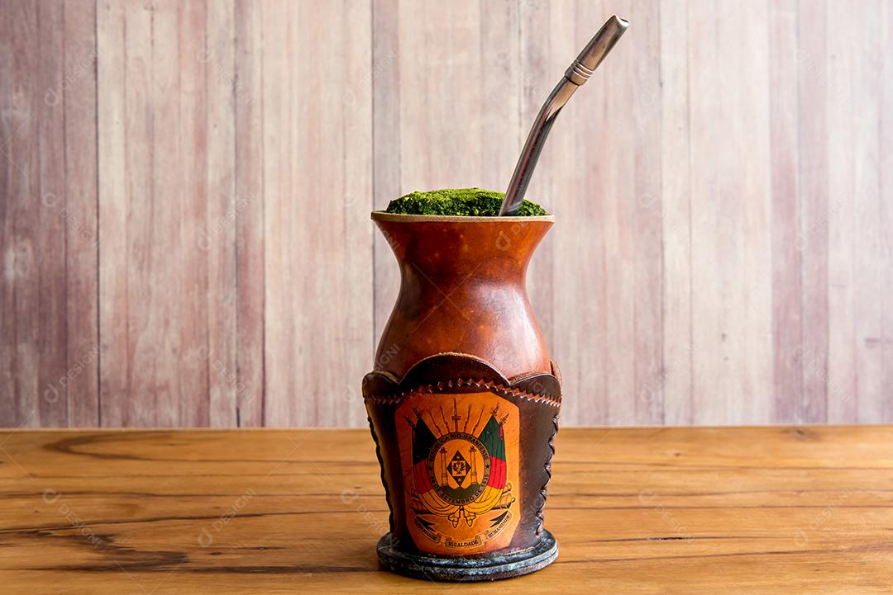
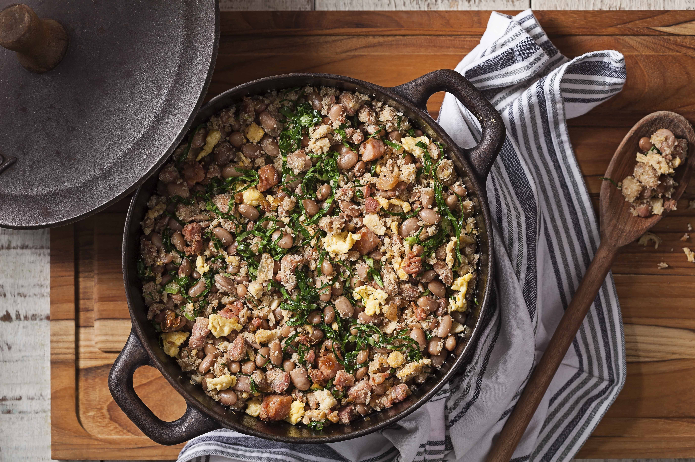

Gastronomia Brasileira
Explore os sabores únicos de cada região do Brasil
Bahia
Sabores intensos com influência africana
A culinária baiana é uma das mais marcantes do Brasil. Possui forte influência africana, com uso de azeite de dendê, leite de coco e temperos intensos. É uma cozinha rica em sabor e tradição cultural.
Pratos típicos
- Acarajé: bolinho de feijão frito no dendê recheado com vatapá
- Moqueca: ensopado de peixe com leite de coco e dendê
- Vatapá: creme feito com pão, camarão e temperos


Rio Grande do Sul
Tradição gaúcha e sabores fortes
A culinária gaúcha é famosa pelo churrasco e pela forte influência europeia. Carnes assadas e pratos simples, porém muito saborosos, fazem parte da cultura local.
Pratos típicos
- Churrasco gaúcho: carne assada na brasa
- Galeto: frango assado com temperos especiais
- Chimarrão: bebida tradicional feita com erva-mate


Minas Gerais
Comida caseira e tradição mineira
A culinária mineira é conhecida pelo sabor caseiro e aconchegante. Utiliza ingredientes simples, mas com preparo cuidadoso. É considerada uma das melhores do Brasil.
Pratos típicos
- Pão de queijo: tradicional e amado em todo o país
- Feijão tropeiro: mistura de feijão, farinha e carne
- Frango com quiabo: prato típico das famílias mineiras

